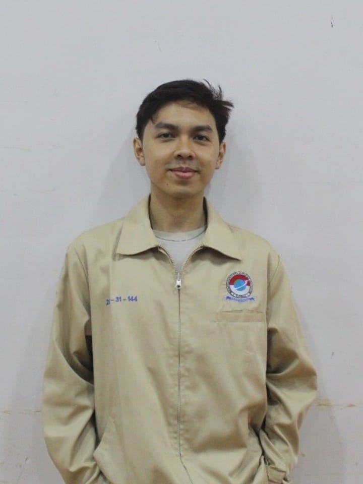

Pengembang dengan fokus pada rasionalitas desain dan efisiensi sistem. Berpengalaman dalam manajemen lab, analisis data dasar, dan pengembangan aplikasi berorientasi tujuan.

Mahasiswa Teknik Informatika Institut Teknologi PLN (NIM: 202331144). Aktif dan berdedikasi tinggi dengan minat utama pada optimalisasi antarmuka dan penguasaan Microsoft Office Specialist.
Terbiasa dalam lingkungan kolaboratif, penanganan administrasi, dan koordinasi struktural yang diperoleh dari pengalaman riil sebagai asisten laboratorium di Language Development Center.
Tingkat efisiensi tinggi
Bahasa Inggris (LEAP/ECC)
Mengkordinasikan berbagai program kunci termasuk Student Research Challenge (SRC), pengawasan ujian standar (BEES, ELT), pelatihan MOS (EMOS), dan program akselerasi bahasa Inggris untuk dosen (LEAP).
Mencapai Top 5 ENFEST 2025 (Business Case), Juara Harapan 1 Lomba KTI B2N UNTAN (2022), dan Juara 2 Peraga Matematika GAMMA UNTAN (2021). Konsistensi dalam pencapaian analisis logis dan presentasi.
Aplikasi pemetaan tugas mahasiswa berbasis Android. Diimplementasikan menggunakan SDLC model Waterfall dan Sistem Pendukung Keputusan (algoritma TOPSIS) untuk penentuan prioritas objektif.
Proyek web interaktif untuk pariwisata Indonesia. Berperan sebagai Ketua Tim. Dibangun dengan basis arsitektur *frontend* statis (HTML, CSS, JS) dan dihosting terdesentralisasi melalui GitHub Pages.
Penelitian ini menguji efektivitas purwarupa Smart Assignment Mapping dalam menyelesaikan beban ganda akademik/non-akademik mahasiswa. Menggunakan arsitektur SDLC Waterfall dan algoritma TOPSIS sebagai Sistem Pendukung Keputusan (SPK) untuk mengkalkulasi prioritas tugas secara matematis, menekan risiko kelalaian dan bias manajemen waktu.
Baca di Google ScholarEvaluasi data portofolio ini. Jika parameter kompetensi saya sesuai dengan standar arsitektur tim Anda, hubungi via kanal di bawah ini.